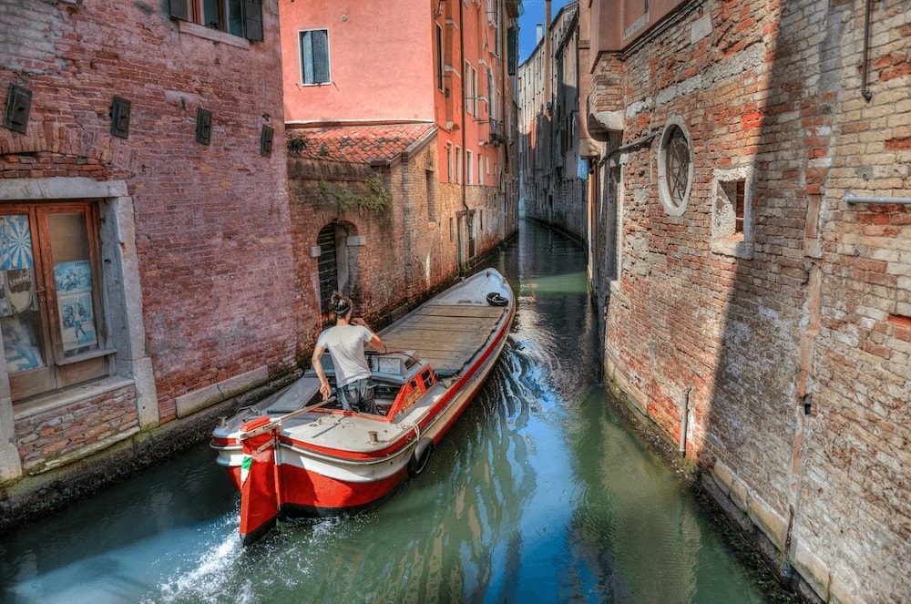

Must See Attractions

The Colosseum
Step back in time and marvel at the grandeur of this iconic amphitheater in Rome, a symbol of ancient engineering.

Venice Canals
Glide through the enchanting canals of Venice on a gondola and explore the city's unique charm and architecture.

Cinque Terre
Discover the colorful villages perched on cliffs along the Ligurian coast, surrounded by breathtaking sea views.